- Abra el capó.
- Desconecte el cable negativo de la batería. Consultar Desconexión y conexión del cable de batería negativo .
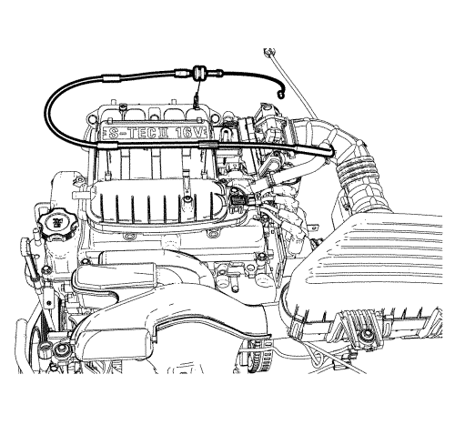
- Desconecte el cable del acelerador y apártelo del colector de admisión.
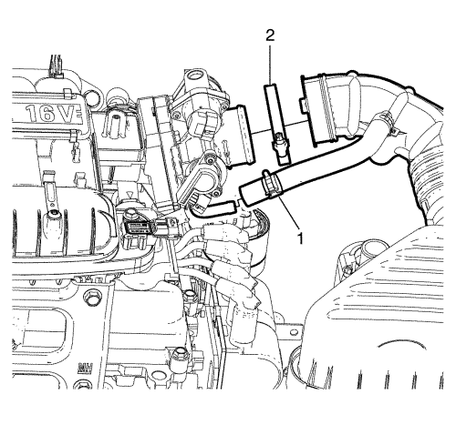
- Desmonte las abrazaderas (1, 2).
- Gire y tire de los tubos flexibles para desmontar el conjunto del cuerpo del acelerador.
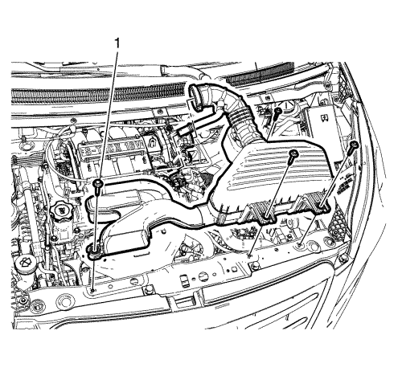
- Extraiga los 4 pernos (1) del conjunto del filtro de aire.
- Extraiga el conjunto del filtro de aire.
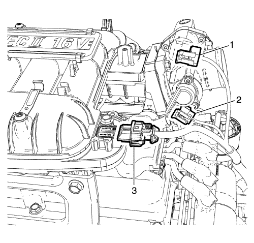
- Desenchufe el conector (1) de la válvula de control del aire en ralentí (IACV).
- Desenchufe el conector (2) del sensor de posición del acelerador (TPS).
- Desenchufe el conector del sensor (3) de presión absoluta del colector de admisión (MAP).
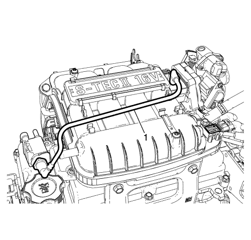
- Desmonte el tubo flexible del solenoide de purga del cartucho (1).
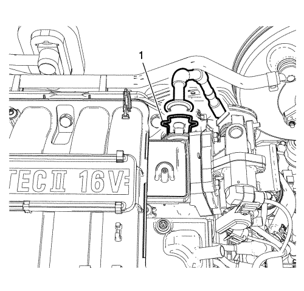
- Levante el clip (1) mediante una herramienta adecuada.
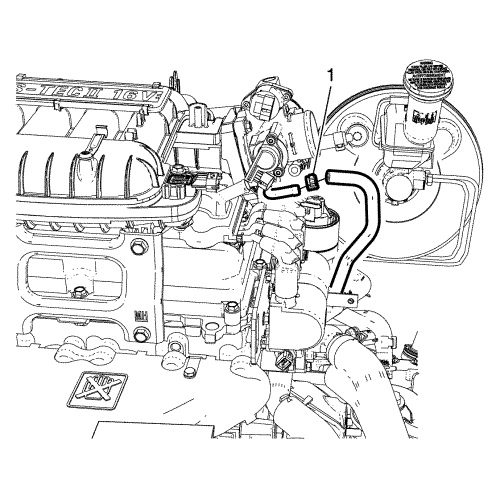
- Desconecte el tubo flexible de sangrado de refrigerante (1) de la carcasa de salida.
Nota: Tapone o selle los tubos flexibles y las entradas al separar los componentes del sistema de refrigeración, esto previene la entrada de suciedad u otros contaminantes en el sistema de refrigeración.
- Tapone o selle los tubos flexibles y las entradas del sistema de refrigeración.
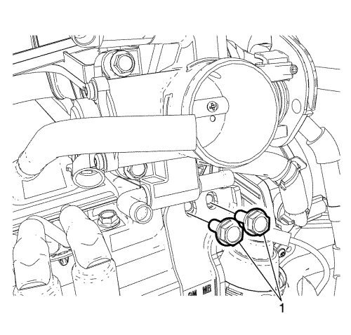
- Extraiga los pernos de retención (1) del colector de admisión superior al soporte lateral.
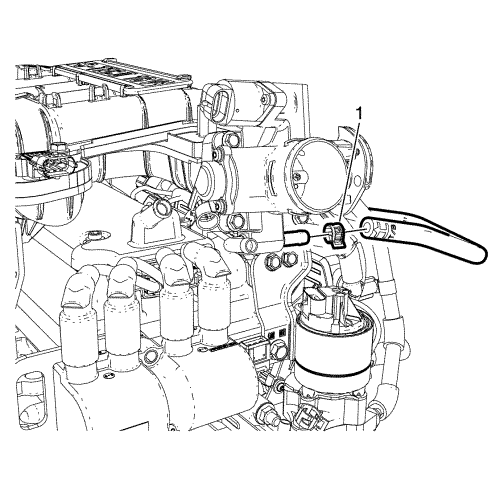
- Desconecte el tubo flexible de recuperación de refrigerante (1) de la carcasa de salida.
Nota: Tapone o selle los tubos flexibles y las entradas al separar los componentes del sistema de refrigeración, esto previene la entrada de suciedad u otros contaminantes en el sistema de refrigeración.
- Tapone o selle los tubos flexibles y las entradas del sistema de refrigeración.
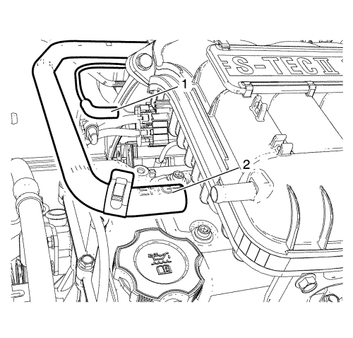
- Desconecte el tubo flexible (1) del colector de admisión superior.
- Desconecte el tubo flexible de vacío (2) del colector de admisión superior.
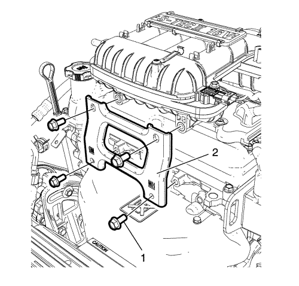
- Extraiga los pernos (1) del colector de admisión superior al soporte delantero.
- Desmonte el soporte delantero (2).
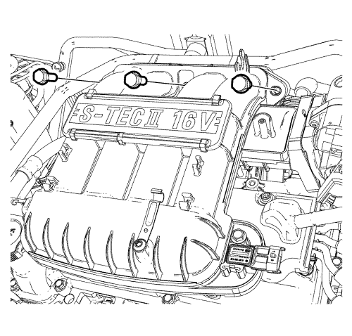
- Desmonte los pernos de retención del colector de admisión superior al colector de admisión inferior.
- Extraiga el colector de admisión superior.
- Desmonte el conjunto del cuerpo de la mariposa. Consultar
Sustitución del conjunto del cuerpo de la mariposa : FX3 → Sin FX3 .
- Desmonte el sensor de presión absoluta del colector (MAP). Consultar Sustitución del sensor de presión absoluta del colector .